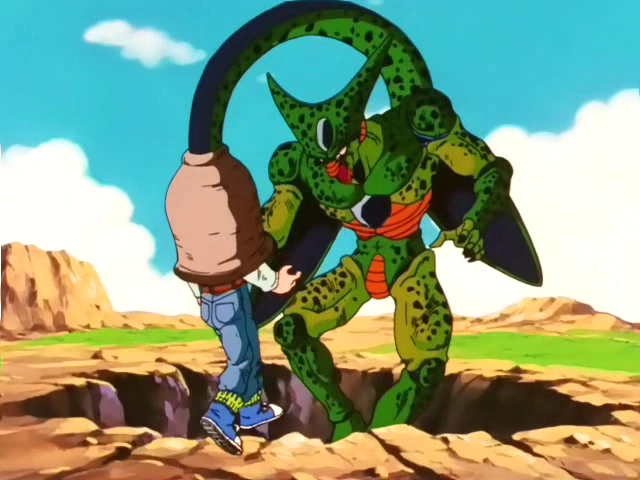
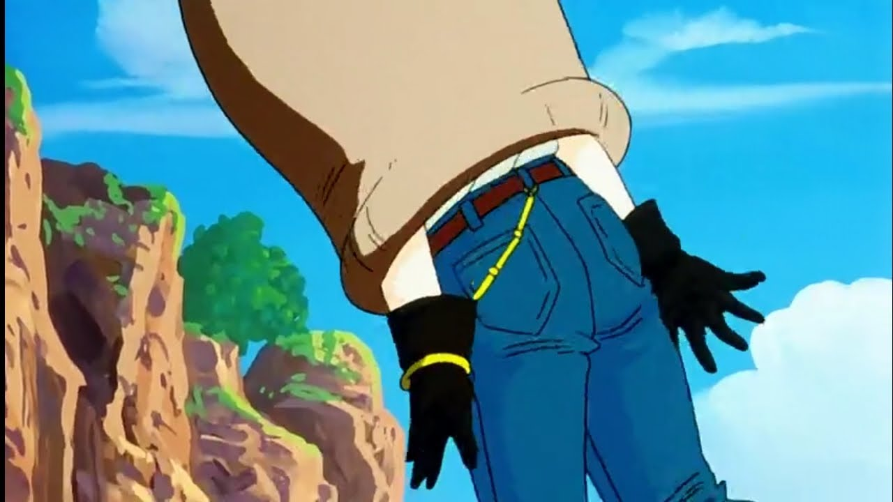
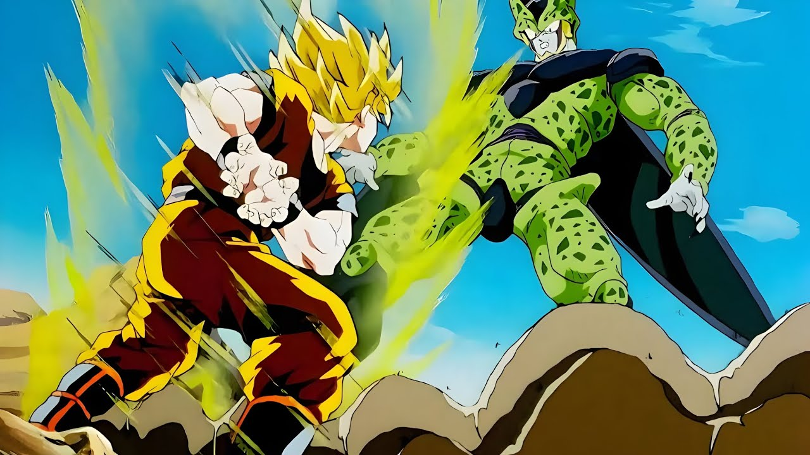
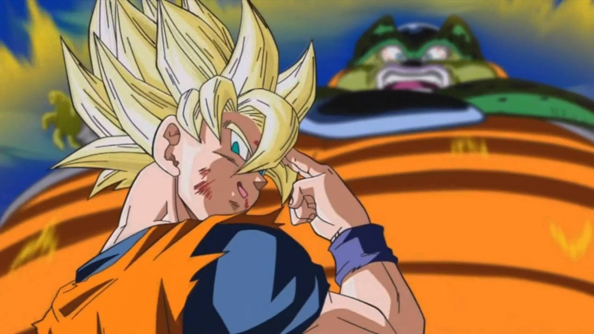
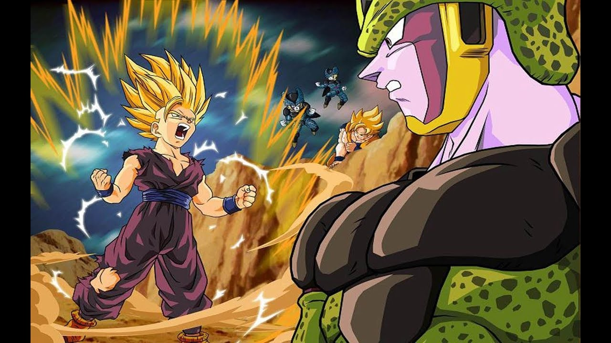
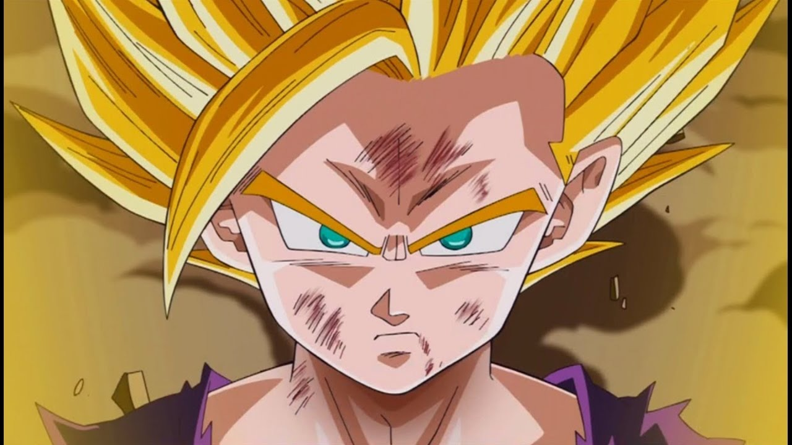

Cell Absorve os Androides
Cell persegue e absorve os androides 17 e 18, alcançando sua forma perfeita. Com esse poder, ele supera os guerreiros Z e inicia o torneio para testar sua força.


Goku vs Cell
Na luta contra Cell, Goku dá tudo de si, mas percebe que não pode vencer. Quando Cell tenta destruir a Terra ao se autodestruir, Goku se sacrifica ao usar o teletransporte para levar Cell ao planeta de Kaioh. Apesar do sacrifício, Cell se regenera, forçando os guerreiros a continuar a batalha.


Gohan vs Cell
A luta de Gohan contra Cell em Dragon Ball Z marca seu despertar como Super Saiyajin 2, motivado pela raiva após a morte de Androide 16. No clímax, ele e Goku unem forças para destruir Cell com um poderoso Kamehameha, consolidando Gohan como herói.